ChSW Names
- ChSW(~20.03.18) - приставка, позначающа приналежність тієї чи іншої речі до ChSW Universe;
- ChSW land(~20.03.18) - назва серверів майнкрафт;
- ChSW Zone(06.11.20) - сервер дискорд, котрий зараз є архівом;
- ChSW Coin(29.07.21) - віртуальная валюта, працююча через дискорд бота;
- ChSW Universe(30.07.21) - назва всесвіту;
- ChSW Period(30.07.21) - умовні періоди, котрі поділяють всю хронологію всесвіту. Періоди залежать від сесозу ChSW land;
- ChSW Pedia(30.07.21) - аналог вікіпедії;
- ChSW Old(30.07.21) - самі перші учасники ChSW Universe;
- ChSW Bot(19.08.21) - дискорд бот, на даний момент не активен;
- ChSW Tube(30.08.21) - офіційний ютуб канал всесвіту;
- ChSW Sites(12.09.21) - сукупна назва сайтів, по тематиці ChSW Universe;
- ChSW Company(21.09.21) - назва компанії;
- ChSW Names(21.09.21) - список назв всередині ChSW Universe;
- ChSW Board(21.09.21) - візуальне представлення володінь та взаємодій ChSW Company з іншими компаніями;
- ChSWшники(03.10.21) - не канонічний серіал, заснований на героях з ChSW Universe;
- ChSW TikTok(21.10.21) - тікток, в котрому виходять урізані версії відео з ChSW Tube;
- ChSW Вісник(03.01.22) - назва, що належала новосній газеті на ChSW land`і 4.0. Дана назва, на даний момент, не використовується;
- ChSW NFT(05.03.22) - назва NFT міток.
- ChSW Players(04.06.22) - карткова гра з персонажами з ChSW Universe.
ChSW Universe - це...ну ви зрозуміли, всесвіт ChSW це зібрання всього, що так чи інакше пов'язано з маркою ChSW, в даній ChSW Pedi`ї ви зможете детально, а саме те, як пам'ятаю це я(GGsmou, aka Svyat), ознайомитися з історією цього всесвіту.
До ЧСВшна епоха
В до ЧСВшну епоху було мало подій, але саме з неї все почалося. Стартом став перший постійний глядач стрімів GGsmou - Ukrainian_Bear(aka DaruD), через деякий час до них дадався GARRYS(aka MERGA), smyilik, LineOffer(aka voortex). Так і з'явився основний костяк, котрий комунікував через ДС сервер GGsmou "Twitch Speak Svyat". Ці події відбувалися десь у 2017 році.
Картинка(Дискорд сервер Twitch Speak Svyat)

Якось, у 20-их числах березня 2018 року, ЧСВшниками був відкритий такий пречудовий хостинг серверів майнкрафту, як Realms, котрий дозволяв за безкоштовно(перші 30 днів) грати в пречудові міні ігри, але все пішло не за планом в один день. Тоді GGsmou прийшов до smyilik`а та запропонував зіграти в міні ігри на реалмсіЮ але смуйлик грав у ванілу, GGsmou відповів, що не буде грати в цю нудну ванілу, але після недовгих переконань вони пішли у ванілу, так і з'явився перший сервер ChSW land 1.
Епоха з першого до другого ChSW Land`ів
Сервер, почавшийся з двох гравців, розрісся в ціле ком'юніті, членами котрого були всі учасники ChSW Old(костяк).
Картинка(Панорама ChSW land`у 1)

Далі йшли часи, про котрі всі забули, можна сказати одне, був хаос і нерозбірство, ЧСВ ленди народжувалися й помирали один за одним. На даний момент, найкраще зберігся момени із 09.01.19 з одного із останніх ЧСВ лендів з модами, наданих на цьому стрімі. Але все змінилось, коли вийшла 1.16.
Епоха з другого до третього ChSW Land`ів
Це був звичайний липневий день 20-го року, я лежав на кроватці й думав про майн і тут мені приходить повідомлення від smyilik, котре глаголить: "Го зробимо ЧСВ ленд 2.0"(не дослівно).
Картинка(Панорама ChSW land`у 2.0)

Почалося все з відкриття сервісу з доставки продуктів Яндекс Їжа відомим підприємцем LineOffer, легендарним замовленням котроо став шалкер м'яса.
Картинка(Яндекс Їжа від LineOffer`у)

Картинки(Новини ChSW land`у 2.0)
.png)
.png)
.png)
.png)
.png)
.png)
.png)
.png)
.png)
.png)
.png)
.png)
.png)
.png)
.png)
.png)
.png)
.png)
Але навіть на цьому насичена історія не закінчується, за часи серверу трапилося багато подій по-менше: підпал дому Канодіан та дерева GGsmou, а також вибух домівки Лові. В цілому життя серверу було насиченим, але не настільки, як життя ЧСВ ленду 2.1, котрий все ж зміг застати DaruD.
Історія ЧСВ ленду 2.1 відрізняється більш серйозним підхідом у всьому, окрім набору гравців(натякая на шкілу). Офіційно почалася вона 03.02.21, але до того був невеликий проміжок діяльності серверу.
Картинка(Спавн ChSW land`у 2.1)

Картинка(Об'явлення дуархії на ChSW land`і 2.1)

Картинка(Карта клієнта XX Bank`у)

Картинка(Реклама религії Балдежу)

Картинка(Хаб в аду ChSW land`у 2.1)

Не варто забувати про міні-сервер з модами, котрий якийсь час стояв на хості ЧСВ ленду 2.1.
Після йшло два сервери, 2.2 і 2.3. Про другий сказати щось окрім "анархія, вмерша через декілька днів" нічого й не можна. Хоча другий так само вмер через тиждень, він приніс набагато більше історій, ніж нічого. Почався він з трьох гравців(smyilik, DaruD, GGsmou)(02.05.21), проходив у тій самій групі ChSW Zone й був на політ. тематику, на політ. карті Землію Все цікаве розповість нам розділ "Дипломатія", а саме: переїзд GGsmou до Австралії(02.05.21), блокування проходу до Червоного моря й Суецького каналу smyilik`ом та DaruD`ом(02.05.21).
Картинка(Схема ділення території smyilik`ом і DaruD`ом)

Епоха з третього до четвертого ChSW Land`ів
Як було сказано, третій ЧСВ ленд став провальним, через відсутність бажання гравців на відкриття(12.06.21) прийшов тільки GGsmou, котрому до сих пір DaruD не повернув двадцятку за хост. Сервер має всього декілька гучних та цікавих подій, а саме перший суд(22.06.21), про визнання DaruD`a охоронцем спавну(успішний суд). Тайне вбивство дракона(14.06.21), програшна, для Монархів, війна(24.06.21), поява нової релігії Пігстепіріанства(25.06.21). Й це все можна знайти в уже традиційному, не докінця канонічному відео(30.06.21).
На цьому закінчується історія ЧСВ ленду 3.0, але тільки починається(29.07.21) історія ChSW Coin`у. Відмінно все описує дана паста:
Картинка(Паста про ChSW Coin)

Наступною історичною подією стало відкриття(30.07.21) сайту ChSW Pedia, на котрому ти зараз це все читаєш.
Також хочеться згадати міні-подію, в результаті якої з'явився(19.08.21) дискорд бот під назвою ChSW Bot, але через поганий функціонал він є непотрібним.
Картинка(Логотип ChSW Bot`а)

Після невеликого затишшя почалася буря.
Першою подією стала купівля(23.08.21) ChSW Zone компанією ~EtEn, відтепер основний контент по даному всесвіту буде розміщатися на дискорд сервері, що належить компанії. Із цікавого можна відмітити договір, котрий завдяки згоді двох сторін став публічним. Варто згадати, що ChSW Zone все ще живий, але знаходиться у замороженому стані й виконує роль архіву. Вище згаданий бот не перейшов на новий сервер, так як є гіршою версією вже існуючого боту Flemchik, що належить ~EtEn.
Другою важливою подією стала поява(30.08.21) офіційного чсв каналу на ютубі, під назвою ChSW Tube. Де відтепер можна буде знайти всі свіжі релізі, пов'язані з ChSW Universe.
Картинка(Повний банер ChSW Tube)

Також треба відмітити покращення(12.09.21) стосовно сайту ChSW Pedia, було змінено посилання, а також з'явився каталог сайтів(ChSW Sites) створений GGsmou.
Картинка(Логотип ChSW Sites)
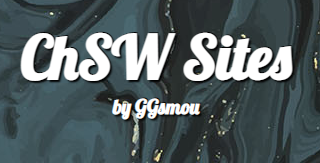Як можна було помітити ChSW Company та ~EtEn Company почали часто взаємодіяти, це все вилилося в договори та спільні проєкти, для зручності розуміння та відслідковування була створена доша(ChSW Board)(21.09.21), на котрій відображаются проєкти обох компаній та їх взаємодії, з короткими умовами.
Під час створення дошки з'явився(21.09.21) термін ChSW Names, котрий означає совокупність назв всередині ChSW Universe.
Важливою подією став вихід(03.10.21) серіалу ChSWшники(ЧСВшники), котрий розповідає про неканонічні події, що трапилися з героями ChSW Universe. На даний момент вийшов 1сезон(5 серій), котрі вже доступні до перегляду. Не відомо коли точно буде продовження, але можна бути впевненими(ні), що воно вийде.
Картинка(Прев'ю трейлеру ЧСВшників)
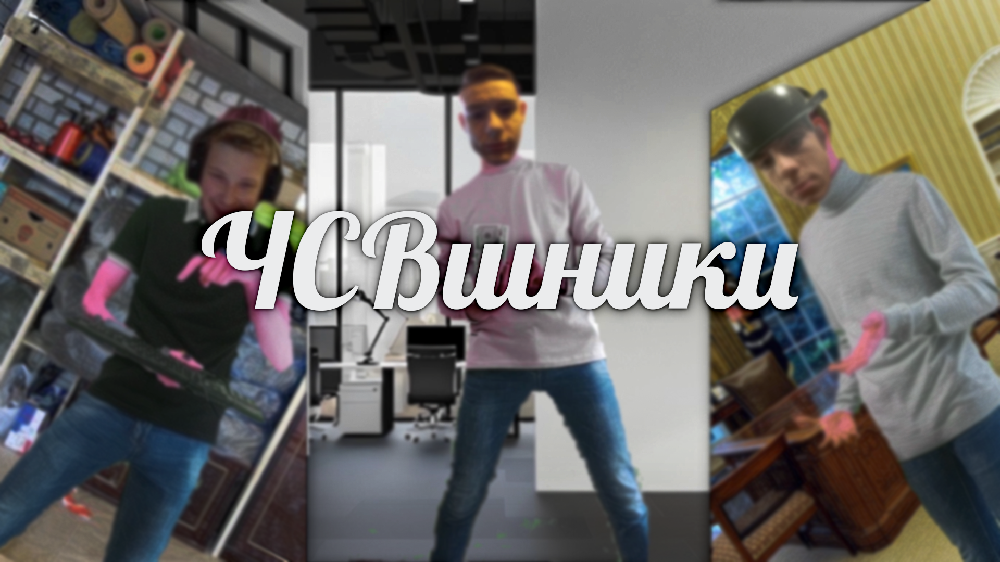Був створен ChSW TikTok(21.10.21), в котрому будуть виходити урізані(зумерські) версії відосів з ChSW Tube.
Ну а на цій вельми забавній події закінчується епоха №3, за ній слідує епоха №4, котра перевершила будь-які сподівання.
Епоха з четвертого ChSW Land`у
Даний ЧСВ ленд має дуже цікавий початок, його чекли всі, окрім організатора(GGsmou). Хоча з самого початку так не здавалося, на відкритті(27.12.21) прийшло не так багато людей, а хто прийшов - стояв у афк, але це не завадило йому стати одним із амих цікавих ЧСВ лендів, у першу чергу через політ. перепалки, бо в майні подій було значно менше.
Пропоную почати з самого початку, першим Президентом став(28.12.21) DaruD, котрий вирішив пересидіти все своє правління в бункері, але це, чомусь, не сподобалося народу й не дивлячись на спроби Короля GGsmou заспокоїти плебс і два воєнних положення від Президента, все рівно відбувся(хоча й не за правилами) держ. переворот(03.01.22).
Картинка(DaruD і GGsmou заспокоюють переворт сидячи в бункері)
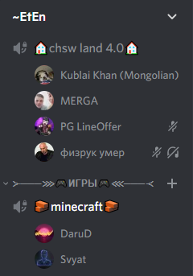Як ітог до влади прийшов новий для всесвіту, але старий для олдівЮ Bohdan та його анархо-друг й за сумісністю "людина, втративша яйце дракона" smyilik, котрі влаштували переворот. У зв'язку з цим усі закони DaruD`а відмінилися й почали виходити нові, що в кінці кінців призвело до 50+ указів та 18 законів, котрі можна прочитати в архиві ChSW land`у 4.0 чи на сервері дискорд.
Картинка(Bohdan та smyilik готують переворот)
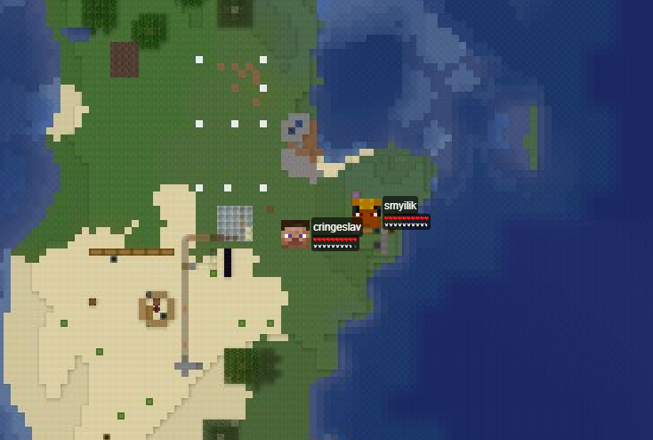Такі дії призвели до пограбування(05.01.22) GGsmou з боку держави(Bohdan та smyilik), за що, як ітог, вони були засуджені й повинні були відсмоктати. Більше судових справ розписано тут.
Картинка(smyilik грабує GGsmou)
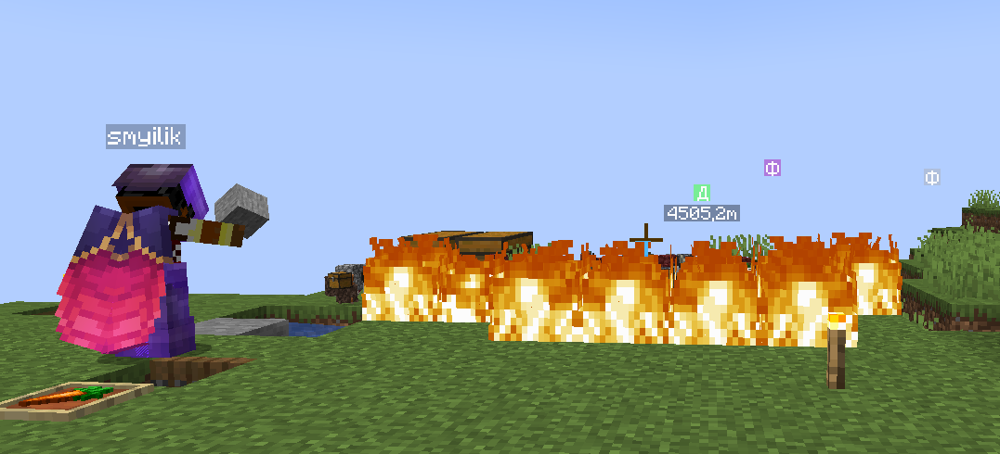Після невеликого затишшя почалася(07.01.22) буря, через правову помилку від Президента Bohdan`а в його бік, а також у бік Віце-Президента smyilik`а та Верховного Судді LineOffer`а полетіли судові справи від GGsmou, котрий у свою чергу був спочатку засуджен Bohdan`ом за клевету, а пізніше підсаджен на держ. кормушку у вигляді посту судді.
Картинка(Новина пропідкуп оппозиції в ChSW Віснику)
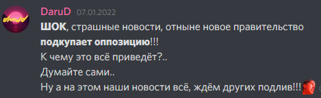Картинка(Веселощі після суда над GARRYS)
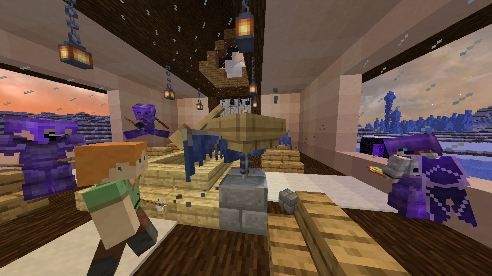Здавалось би на цьому все, але ні, після того як GGsmou і Bohdan почали зближатися GGsmou став(08.01.22) Віце-Президентом. Це трапилося, бо smyilik не схотів тримати владу за схемою "Путін-Медведев", хоча його можна було зрозуміти, він був фаворитом на виборах, котрі він сам програв через махінацю з одним єдини голосом DaruD`а, котрий нічого б не вирішив. Після такого smyilik прийняв рішення відділитися.
Картинка(Доказ махінації з боку smyilik`а)
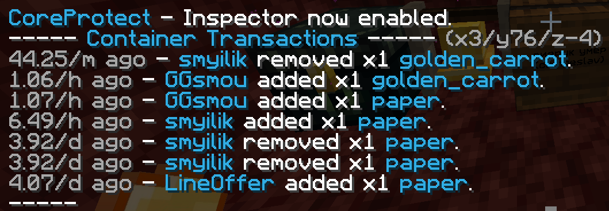Так і з'явилась нова держава Winterfellian Empire, котре пізніше(09.01.22) почало випускати свої закони та переманювати до себе мігрантів та жителей ChSW Land`у.
Що стосується останнього, то там відбувся(09.01.22) захват влади завдяки появі Конгресу.
Картинка(Перший та останній міжнародний договір(не схвалений імперієй))
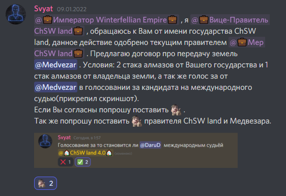Ну й останньою подією для сезона стала поява першого в історії гравця, котрий не був знайомий ні з ким з гравців. Нажаль він зник так само загадково, як і з'явився...
На цьому й закінчилася історія ChSW land`у 4.0(традиційно за тиждень до кінця хосту).
Через деякий час після такого жвавого ChSW land`у відбулася цікава подія, у ChSW Universe з'явились(05.03.22) свої NFT, которі вже зараз можна купити(чи просто відскріншотити тут), а для тих кому лінь, частково їх можна подивитися нижче:
Картинка(ChSW NFT(частково))
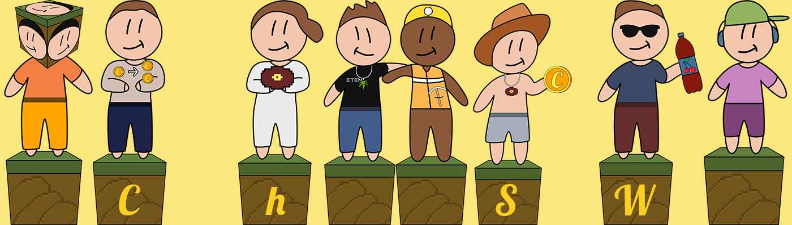Невеликою, але значущою подією стало розторгання(08.04.22) договіру купле-продажу ChSW Zone, котрий був укладений ще в 3 епосі. Це не означа вихід вище згаданого серверу зі стану архіву, але подібно стало можливим у майбутньому.
Варто відмітити, що оскільки договір більше не дійсний, було прийнято рішення перенести всі архівні дані до ChSW Zone, котрий був трохи переоформлений та почищений від зайвих речей.
Цікавинкою стала поява(04.06.22) дизайну карток, а також правил для настільної гри ChSW Players.
Картинка(ChSW Players(1 картка))
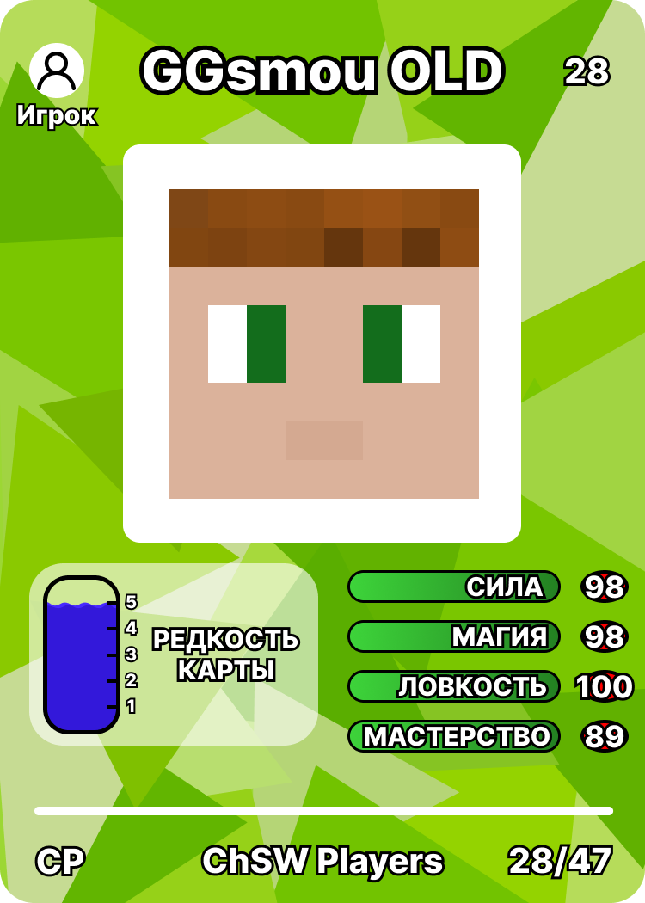Пізніше, після появи ChSW Players, було прийнято рішення відкрити сервер, де можна буде віртуально пограти в цю й не тільки ігри, а також просто провести час.
За сумісністю сервер став колаборацією ChSW та ~EtEn(хтоб сумнівався), а також він ознаменував створення(07.06.22) об'єднання ChECode, котре вже має усобі ChECode Zone 🇺🇦 - укромовний дискорд сервер(про нього було сказано вище) й ChECode Stack - тикток для піару.
Малою цікавникою став переклад всіх ЧСВ сайтів, включно з архівом 4.0 та ChSW Pedia на українську мову, з збереженням російської версії для двох останніх сайтів. Переклад був поступовим й закінчився 28.07.22.
Відтепер буде вестися дві версії ЧСВ педії.
А на цьому доки все, чекаємо подальших подій...